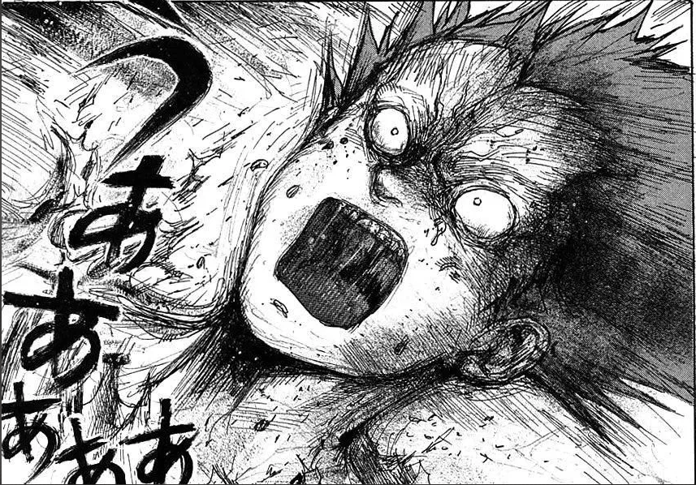
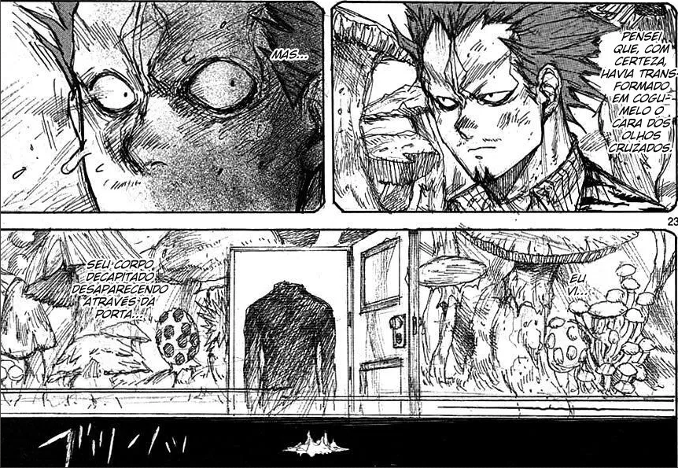
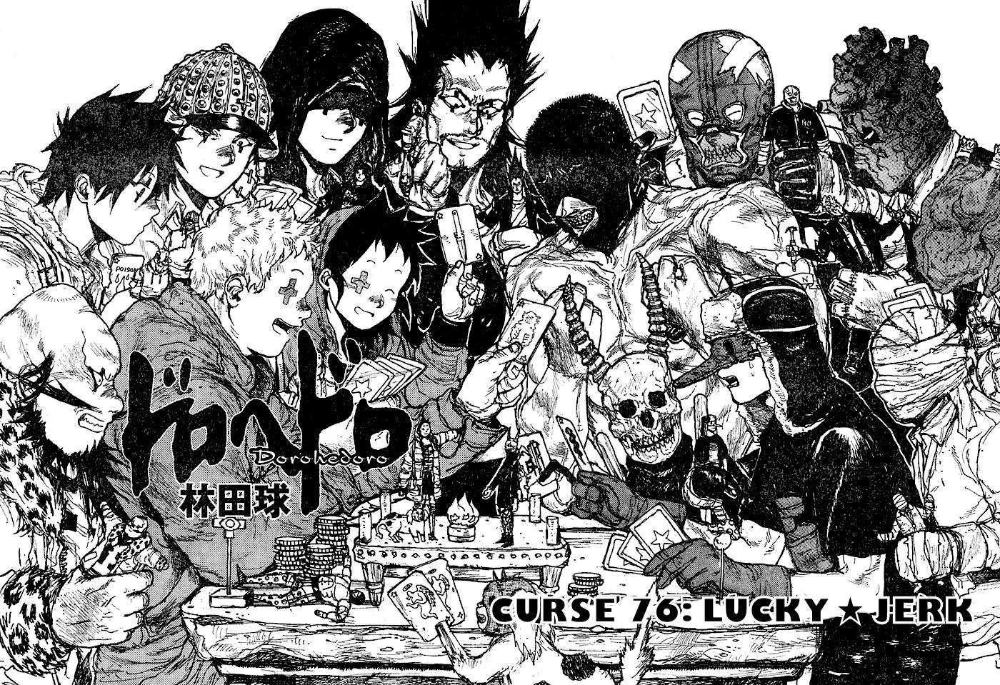

- Nome: En;
- Idade: 43 anos;
- Altura: 1,83 m;
- Peso: 86 kg;
- Magia: Tipo Transformação: Cogumelos;
- Máscara: Feita por diabos;
- Aparência: Visto usando um traje formal folgado e deixando seu cabelo vermelho espetedo para cima. Tem uma larga testa e olhos ameaçadores, ressaltados pela sua falta de sombrancelhas. Sua máscara é somente um bocal que se assemelha a algo como uma máscara de gás e a boca de um crânio. Sem ela, ele abresenta um bigode fino com cavanhaque;
- Personalidade: Em é calmo e confiante em tudo que faz, cheio de si e suas habilidades e o simples pensamento de alguém colocando o dedo nele em uma luta, o usuário de magia mais poderoso do mundo, pode fazer com que ele perca o controle de suas emoções e enlouqueça. Mas ele mostrou bastante preocupação para os membros da sua família (especialmente a Kikurage). Independentemente do que os outros pensem ou desejem, os desejos de En vêm em primeiro lugar, e ele fará de tudo para conseguir o que quer. Mesmo que isso signifique matar, sequestrar ou forçá-los a fazer o que ele diz, renunciando a uma abordagem mais diplomática;
- Gostos: Tomar chá, cuidar de seu járdim exótico de cogumelos, comer cogumelos (apenas cogumelos), todos os membros da sua família.
O BIG BOSS
En é um dos antagonistas da série de mangás e animação "Dorohedoro". Sendo o chefe da Família En, ele é o senhor Mundo dos Feiticeiros, tendo apenas os diabos acima dele.
SONHO KINOKO
THE BOSS - DEATH MUSHROOMS
Sua lembrança mais antiga é de ser um bebê, circulado por cogumelos em todos os lados. Acredita-se que ele matou os próprios pais com a sua magia. Sua próxima lembrança é de ser encontrado por um vendedor de escravos e mandado para uma fábrica que colhe a fumaça de feiticeiros.
Ele ficou nessa fábrica por 9 anos até sua fumaça secar e ser jogado em um rio, até um diabo que estava passando o confundir com um corpo morto e o jogou no inferno.
{kind=link}
"Mas mesmo eu caindo no inferno, eu não morri! Graças a meu ódio por todos eles, minha vida se recusou a arder nas chamas do inferno!" - En, ep. 11/capitulo 36.
En viveu no inferno por dois anos, transfomando os feiticeiros mortos em cogumelos para se sustentar, até ser achado por Chidaruma, o senhor do inferno. Chidaruma o deu o nome "En" e uma máscara antes de mandá-lo de volta. Meio ano se passou e En voltou até aquela fábrica, onde ele matou todos os seus captores e destruiu todo o edifício, lá, alguns dos poderosos usuários de magia libertados por ele juraram lealdade a En, e assim a família En nasceu, assumindo o controle da maior parte do mundo do crime e efetivamente trazendo ordem ao mundo com força bruta.
Vinte anos depois, com En e a família governando todo o Mundo dos Feiticeiros, assassinatos começaram a acontecer, onde as vítimas eram feiticeiros poderosos e o assassino sempre leva a cabeça delas. Por focar também em membros da família, En começou uma caça até encontrá-lo, causando muitos membros mortos, mas quando conseguiram encontrá-lo, En foi o encarar pessoalmente. A única lembrança que ele tem do confronto com o homem com cruzes foi o fim, onde a cidade de Mastema foi toda transformada em um deserto inabitável cheio de cogumelos, sua máscara foi quebrada e obteve um corte ralo no pescoço. Mas quando ele estava para sair da cidade, ele viu um homem sem cabeça, entrando em uma porta para Hole.
{kind=link}
(Todos esses fatos foram tirados da autobiografia "The Boss". Shin e Noi declaram que a maior parte do filme, mesmo que fosse preciso em alguns momentos, era um exagero feito para fazer o En parecer legal.)
Atualmente, En continua a procura de membros poderosos para sua família, especialmente a procura de um feiticeiro com magia temporal, para que ele volte até aquele momento, e ter certeza de que o homem de olhos cruzados está realmente morto.
A FAMÍLIA EN
A Família En engloba todos aqueles que trabalham sob o En e é a organização que domina o Mundo dos Feiticeiros. Eles tem uma estética similar a uma máfia italiana e são responsáveis pela administração do Mundo dos Feiticeiros e realizar os pedidos do En.
A chega do En e da Família causou uma grande mudança na sociedade feiticeira, onde seu valor como pessoa depende da qualidade da sua magia e quanta fumaça você prodúz.
- Shin: Um dos dois faxineiros da família En que é responsável por matar pessoas que mexem com a Família;
- Noi: A companheira de Shin e a segunda dos duis faxineiros da Família;
- Fujita: Menino de recados para a família com baixa autoestima, que deseja desesperadamente se tornar um membro da família;
- Ebisu: Embora não seja uma membra oficial da família, ela é tratada como uma membra honorária e é livre para andar pela mansão como quiser;
- Turkey: Cria fantoches com sua magia para ajudar a Família En a encontrar pessoas que estão rastreando;
- Chota: Um fã incondicional do En. Usa uma magia do tipo dissipar e freqüentemente incomoda En para se tornar seu parceiro;
- Shou: Assassino original da Família, graças a sua magia tipo invisibilidade. Ninguém parece se lembrar dele ou mesmo notar sua presença, o que o deixa muito deprimido.
Alguns membros de destaque são:
O QUE APRENDEMOS NESTA MALDIÇÃO?
- En é o chefe da Família En
- En e Chidaruma são bons amigos
- O homem-cogumelo tem entranhas
- Um cogumelo deve estar fresco para não apodrecer
- O nêmesis do En tem olhos cruzados
- Mesmo quando bebê, En era... desagradável
- A mansão do En é enorme!!
- "Ele" já estava morto
- En descobriu um monte de coisas!!
- En......................... acorde!!!!!!
- En....................................!!!
- Pela morte do En, fica claro o quanto ele criou com sua magia
- O chefe da Família En foi salvo pelo Shou
- O Mecanismo na sala do tesouro do En é diabolicamente complexo
- Chidaruma está ancioso para ver os resultados dos experimentos do En
- Chidaruma está ancioso para ver os resultados dos experimentos do En
- Fujita faz um grande retorno e pegou o tumor do En!!!